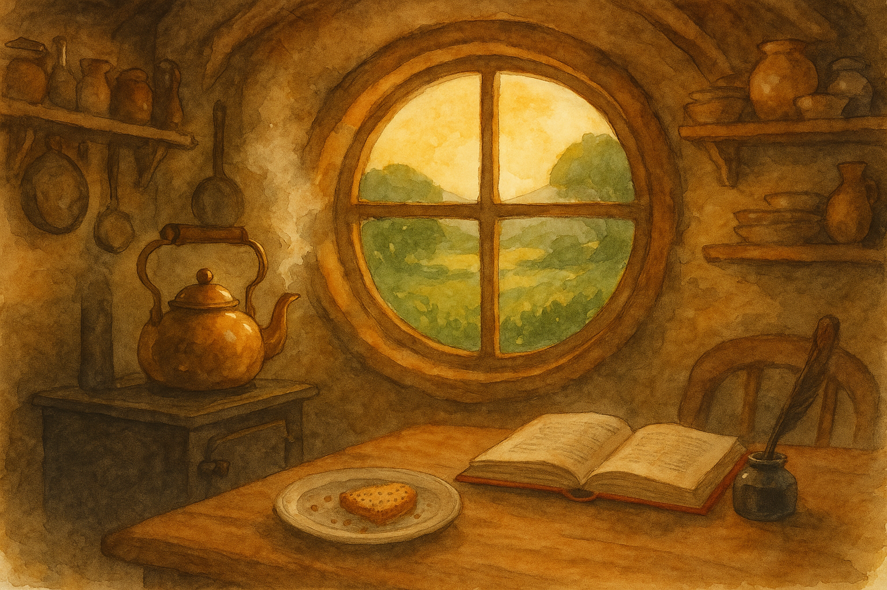

Sundays in the Shire have a talent for making time feel like something you can set down beside your cup. I woke to the kettle’s first polite song and the soft light through the round window, and I decided (boldly) not to be brisk about anything.
There were seed-cake crumbs on a plate — yesterday’s evidence of good sense — and my red book lay open where I had left it. I read a line, closed it again, and thought of the old verse: “Roads go ever ever on…” — and how, in Middle Earth, even the Road approves of a slow start now and then.
So I made tea properly, watched the garden shine with dew on the Hill, and let the morning settle into place like a well-folded napkin. If an adventure ever comes knocking again, it may find me ready — but I should like it to mind its manners and wait until after breakfast.
Filed under: Middle Earth • Written at Bag End